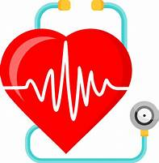
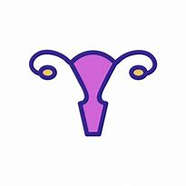
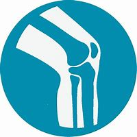

Cardiologia
Accede a nuestros servicios, de manera Rápida, Eficaz y Económica.
* Sin perdidas de tiempo.
* Sin Riesgos.
* Con o sin Obra Social.
Nuestros medicos cuentan con una amplia experiencia y gran capacidad resolutiva.
Registrate y comenza a utilizar nuestros servicios.
MEDICOS ONLINE PARA TODOS
Nuestras Especialidades
Ginecologia
Psicologia
Traumatologia
Clinica Medica
Ventajas de la Telemedicina
+ COMODIDAD - podes solicitar el servicio desde cualquier lugar en donde te encuentres, ya sea en tu casa, en el trabajo, de vacaciones, o desde cualquier parte del mundo. + TIEMPO - muchos de nosotros no queremos perder horas o todo el día en el Hospital o clínica esperando a ser atendidos, por ello solicita un turno con día y horario, y nuestro profesional se comunicara de manera directa y eficaz. + ECONOMICA - Con nosotros no es necesario un pago mensual como con las prepagas, pagas solamente únicamente cuando necesitas ser atendido. + SEGUIMIENTO MEDICO - En nuestro servicio contamos con una historia clínica de nuestros pacientes, para hacer un seguimiento adecuado. + DISPOSITIVOS - Te facilitamos el acceso a nuestros servicios desde cualquier dispositivo: Celular, Tablet, Pc, etc.